Практичні курси · журнал «ДентАрт» 2022 №2
Естетичне відновлення зубів у дітей як запобігання психологічній травмі
Esthetic restoration of children’s teeth as a prevention of psychological trauma
Естетика в дитячій стоматології вийшла на новий рівень не так давно. Нині на сторінках соцмереж, журналів, на телебаченні, у рекламі ми бачимо білі красиві усмішки. Незаперечний факт, що естетична усмішка має велике значення у зовнішності людини, а відтак відіграє значну роль у її адаптації в сучасному соціумі, але навіть сьогодні чомусь цей аспект пов’язують більше з дорослими, ніж з дітьми.
Епоха естетичної стоматології – це епоха високохудожніх відновлень: прямих і непрямих композитних реставрацій, керамічних вінірів, накладок, коронок, які реалізують мрію багатьох пацієнтів про красиві білі зуби. Але якщо підняти підручники з дитячої стоматології і подивитися на реалії сучасного життя, то досі зберігається такий метод лікування, як «сріблення» зубів у дітей – покриття зубів спеціальним розчином срібла для «призупинення» карієсу. Метод, який абсолютно не є лікувальним і може використовуватися лише у виняткових випадках як тимчасовий захід, не вирішує проблему та ще й змінює колір зубів на темний, коричневий, а частіше чорний.
В описі цього методу можна побачити ремарку, що колір зубів не є великою проблемою у цьому випадку, оскільки тимчасові зуби у ротовій порожнині містяться лише певний час і після фізіологічної зміни будуть заміщені постійними зубами. У сучасній стоматології давно доведено неефективність цього методу у боротьбі з карієсом. Також виникає питання, як довго ці темні тимчасові зуби будуть перебувати в ротовій порожнині.
Дитина з неестетичною усмішкою стикається з необхідністю спілкуватися як з досить толерантними дорослими, так і з однолітками, а діти, як відомо, жорстокіше виявляють свої емоції, ніж дорослі. Можна сказати, це не свідомий прояв жорстокості, а безпосередність, оскільки вони говорять про те, що бачать, у них ще немає поняття, що ровесникові може бути дискомфортно, незручно… Дорослий може промовчати в цьому випадку, а дитина не вміє контролювати свої емоції та враження, говорить, не приховуючи свого здивування, обурення, гніву, страху тощо.
Дітям, яким застосували такий метод лікування, як сріблення, дуже часто в суспільстві, організованих дитячих колективах доводиться досить тяжко, оскільки чорні зуби – це нехарактерний колір, і природно, вони вибиваються із загальної картини, ровесники звертають на це увагу, і така дитина стає менш активною, замкнутою, намагається триматися відсторонено, часто інші діти теж не хочуть із нею гратися. Тому говорити про те, що тимчасові зуби можуть бути неестетичними на якийсь період і в цьому нічого страшного немає, – у сучасних реаліях таке ставлення до тимчасового прикусу неприпустиме. Естетика виходить на чільне місце і в дитячій стоматології.
Якщо говорити про карієс зубів, найпоширеніше захворювання у світі, то дослідження 2013 року підтверджують, що карієс помолодшав, і якщо раніше ми діагностували його у дітей віком від п’яти років на чотирьох зубах, то нині карієс починає розвиватися вже з моменту прорізування першого зуба, і в однорічної дитини зуби можуть бути уражені множинним карієсом. Причини цього різні – це можуть бути занадто тривале вигодовування дітей грудьми, годування з пляшечки, солодкі суміші, компоти, соки тощо.
Також у сучасних людей дуже змінився характер харчування, переважає м’яка, розм’якшена їжа, ми менше їмо твердого у зв’язку з обробкою продуктів харчування різними побутовими приладами: блендерами, міксерами. Тому наші діти стали менше жувати, менше навантажувати зуби і щелепи. Тверда їжа відіграє важливу роль у механічному очищенні зубів. У зв’язку з такими змінами харчової поведінки поширеність карієсу збільшується.
Поінформованість нашого населення про індивідуальну гігієну зубів не дуже висока, і люди на пострадянському просторі не звикли проходити профілактичні огляди, приходити на планові візити до стоматолога. Пацієнти звертаються до стоматолога в тому випадку, коли вже є якась проблема із зубами, тому дитячі стоматологи на прийомі все частіше зустрічаються з раннім дитячим карієсом, коли зуби вже потрібно відновлювати, тут уже не йдеться про профілактику на первинному прийомі. Так от, коли ми говоримо про відновлення, то тут слід враховувати той факт, що сучасна дитяча стоматологія перебуває на абсолютно новому рівні. В арсеналі дитячих стоматологів сьогодні всі сучасні методи реставрації, якими стоматологи користуються і для лікування дорослих. Дитяча стоматологія за останні десятиліття зробила великий крок у бік естетики. Вибір методу лікування тимчасових і постійних зубів зараз ґрунтується на двох складових – це здоров’я та естетика.
На первинному прийомі у дитячого стоматолога завданням лікаря є як адаптація дитини до стоматологічного прийому, так і доступне надання всієї необхідної інформації батькам про здоров’я і лікування тимчасових або постійних зубів у дітей, а також про наслідки, які можуть статися у випадках несвоєчасно наданої стоматологічної допомоги.
Маємо пам’ятати, що саме здоров’я тимчасових зубів – це фундамент як здоров’я постійних зубів, так і загального соматичного здоров’я дитини. Також не слід забувати про те, що під кожним тимчасовим зубом міститься зачаток постійного, який тісно пов’язаний з ним. Кожна група зубів у тимчасовому прикусі має власну функцію, яку не варто недооцінювати.
Бічні зуби відіграють велику роль у пережовуванні їжі, фіксації тимчасового прикусу в бічній ділянці. Дуже важливо за наявності каріозного процесу провести лікування в ранні терміни, бо при поширенні інфекційного процесу в кореневі канали (пульпіт) він дуже швидко поширюється і в кісткову тканину (періодонтит), де інфекційний процес може торкнутися зачатка постійного зуба. Наслідки при ігноруванні лікування несприятливі – це рання втрата тимчасового зуба, зміни положення зубів у тимчасовому прикусі, які можуть призвести до утрудненого прорізування постійних зубів або до неправильного положення при прорізуванні останніх, зміни кольору та форми зачатка постійного зуба, його загибель.
При лікуванні карієсу бічних зубів у сучасній дитячій стоматології використовують композитні матеріали, які естетично відповідають усім вимогам. Але за наявності каріозних порожнин більше ніж на одній поверхні зуба або при проведеному ендодонтичному лікуванні збереження функції зуба стоїть на першому місці, тому за міжнародними стандартами рекомендовано покривати такі зуби стандартними коронками (металевими, цирконієвими), які забезпечуватимуть герметичність зуба та виконуватимуть функцію до його фізіологічної зміни.
Фронтальні зуби відіграють дуже важливу роль в естетичному аспекті, але не забуваймо, що ці зуби виконують не менш важливі функції, такі як відкушування їжі та формування мови. При ранній втраті цих зубів у дітей можуть розвинутися комплекси, пов’язані із зовнішнім виглядом усмішки та порушенням вимови окремих звуків.
У сучасній дитячій стоматології лікар має право на вибір методу лікування в залежності від своїх мануальних навичок і картини кожного окремого клінічного випадку. При лікуванні фронтальних зубів можуть бути застосовані як пряма реставрація, так і естетичні коронки (цирконієві, ППМ).
Відновлення тимчасових зубів
У цьому клінічному випадку хочемо розглянути відновлення фронтальних зубів методом прямої реставрації. При використанні цього методу в дитячій стоматології дотримуються всіх правил адгезивного протоколу, якісної ізоляції та техніки відновлення, яка використовується і в постійних зубах. Слід пам’ятати, що чітке дотримання алгоритму впливає на якість реставрації, термін її служби та зовнішній вигляд.
Батьки 4-річного хлопчика звернулися в клініку зі скаргами на неестетичний вигляд передніх зубів у дитини. Після складання плану лікування було вирішено робити санацію ротової порожнини в умовах загального знеболювання.
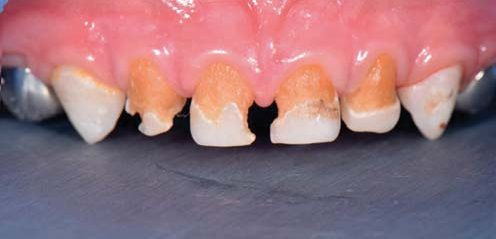
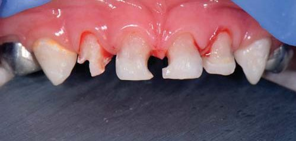
Лікування зубів у дитини робилося під седацією. Це дає можливість якісно виконувати всі етапи реставрації, навіть фотопротоколювання, і дозволяє отримати гарантований довготривалий результат.
Для препарування на емалі використовувалися алмазні бори кулястий і полум’яподібний зеленого та жовтого маркування, на дентині – керамічний бор.
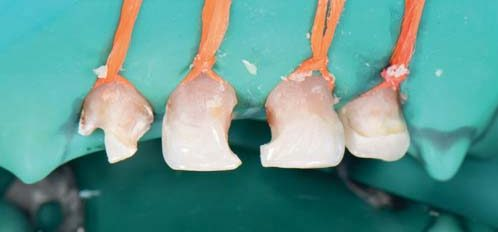
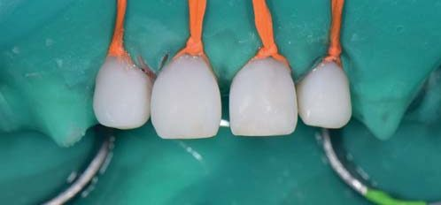
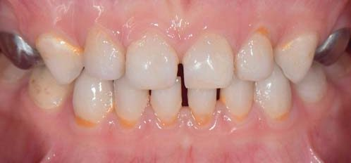
Хочемо звернути увагу на те, що навіть при низькому рівні гігієни всі реставрації збережені і виконують свої функції у повному обсязі. Тому розмови про те, що реставрації тимчасових зубів недоцільні, бо вони «не тримаються», – це міф, який легко можна розвіяти сучасними реаліями дитячої стоматології, а саме дотриманням усіх правил під час виконання алгоритму прямої реставрації.
Відновлення постійних зубів
У другому клінічному випадку ми хочемо продемонструвати відновлення передніх постійних зубів прямою реставрацією. Постійні зуби були уражені внаслідок ігнорування лікування тимчасових зубів і мали явища локальної гіпоплазії. Це завдавало нашій шестирічній пацієнтці моральних страждань. Уявіть, що дитина так чекала появи постійних зубів без каріозного ураження, але отримала неідеальні постійні зуби з естетичним дефектом. Тож було вирішено не зволікати з відновленням і зробити композитну реставрацію з перекриттям вестибулярної поверхні.
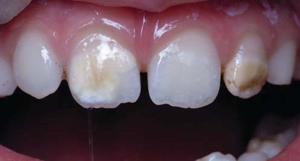
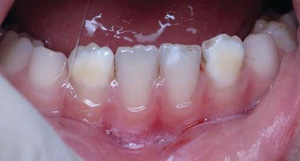
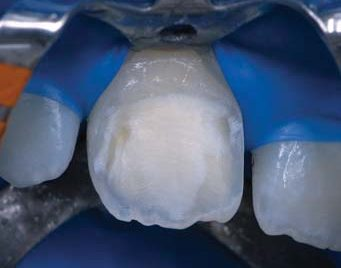
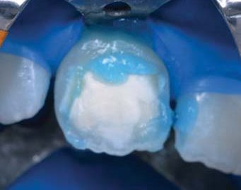
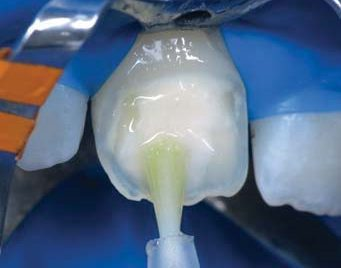
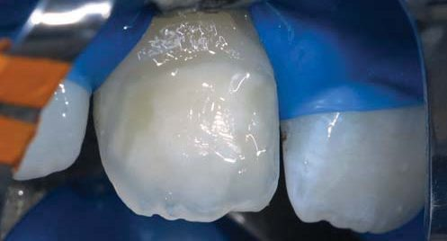
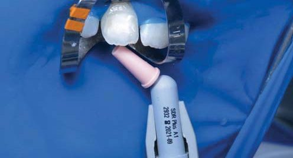
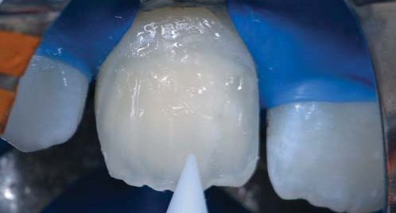
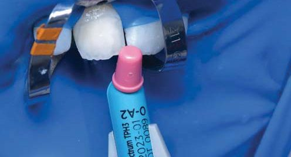
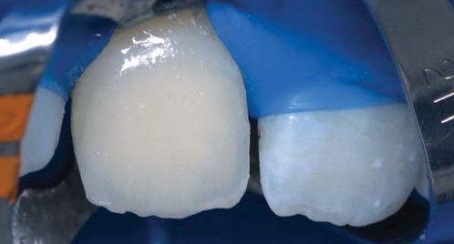
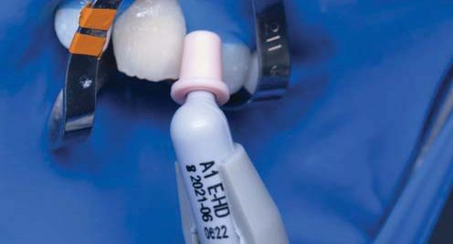
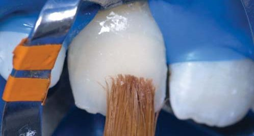
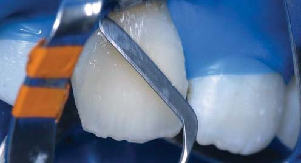
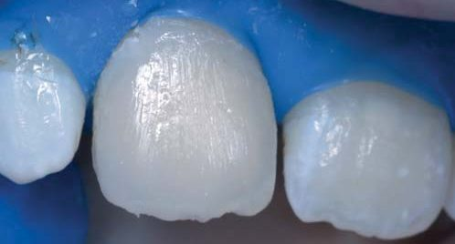
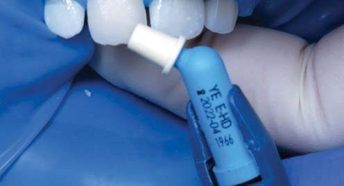
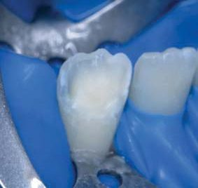
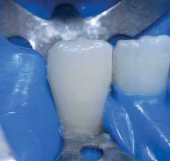
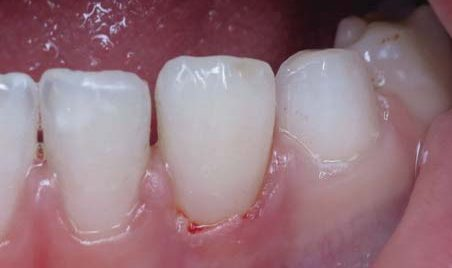
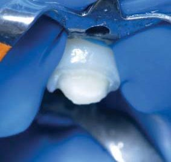
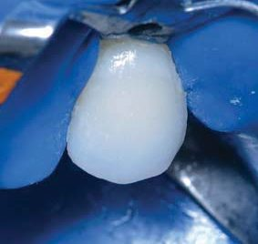
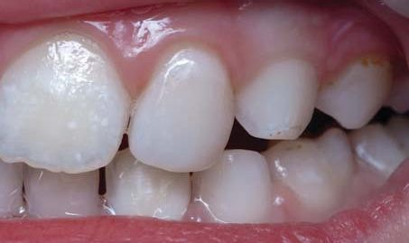
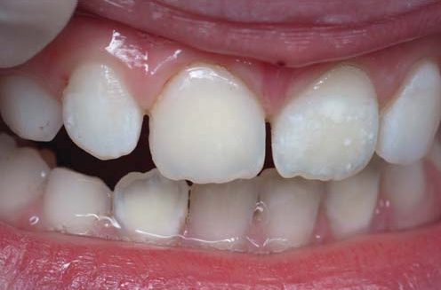
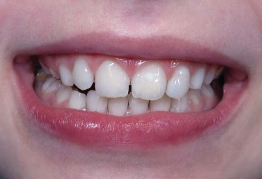
Висновки
Підбиваючи підсумки, можна сміливо заявити про те, що естетика в дитячій стоматології відіграє дуже важливу роль. Приємно спостерігати згодом, як діти, котрим було відновлено фронтальні зуби, стають упевненішими в собі, легше адаптуються до нового соціуму, і звичайно ж, не перестають усміхатися, даруючи людям свою гарну усмішку.
Література
- American Academy of Pediatric Dentistry. Behavior guidance for the pediatric dental patient. The Reference Manual of Pediatric Dentistry. Chicago, Ill.: American Academy of Pediatric Dentistry; 2021:306-24.
- American Academy of Pediatric Dentistry. Best practices for restorative dentistry. The Reference Manual of Pediatric Dentistry. Chicago, Ill.: American Academy of Pediatric Dentistry; 2019:340-52.
- American Academy of Pediatric Dentistry. Policy on early childhood caries: Unique challenges and treatment options. Pediatr Dent 2000;22(suppl):21.
- Berkowitz R. J., Amante A., Kopycka-Kedzierawski D. T., Billings R. J., Feng C. Dental caries recurrence following clinical treatment for severe early childhood caries. Pediatr Dent 2011;33(7):510-4.
- Donly K. J., Garcia-Godoy F. The use of resin-based composite in children: An update. Pediatr Dent 2015;37(2):136-43.
- Paris S., Hopfenmuller W., Meyer-Lueckel H. Resin infiltration of caries lesions: An efficacy randomized trial. J Dent Res 2010;89(8):823-6.
- Лечение и реставрация молочных зубов. (Иллюстр. рук-во) / М. С. Даггал, М. Е. Дж. Керзон, С. А. Фейл, К. Дж. Тоуба, А. Дж. Робертсон; пер. с англ. Под ред. Т. В. Виноградовой. М.: МЕДпресс-информ, 2009. – 160 с.
- Стоматология детей и подростков: Пер. с англ. / Под ред. Ральфа Е. Мак-Дональда, Дейвида Р. Эйвери. – М.: Медицинское информационное агентство, 2003. – 766 с.
Практичні курси естетичної реставрації зубів у Навчальному центрі «Аполлонія»
Курс реставрації